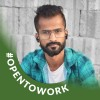

Venkoba Kutagamari
Web Developer, Student at Geekster
LinkedIn
GitHub
Eperiance
Assistant Professor: SME’s Abdul Kalam College, Gadag.-- (from October 2022)
-provide specialized lecturing presentation BCA Core subjects along with laboratory.
-and also take care of academic mini projects guidance.
Skills
- java
- C++
- Python
- JavaScript
- C#
Hobbies
- Create and read something new
- Photography
- Social services
Project
- Agri Report
- “Agri Report is a proposed software web application for computerizing the detailed agricultural information. The software takes care of all the requirements of an average agricultural and capable to provide easy and effective information related to agricultural fertilizer and organic fertilizer.”
- Online Bank Loan System
- “Online Bank Loan System is a proposed software web application is a genuinely efficient way to manage all loan-related sales in a genuinely precise and reachable way. A bank loan application system is an interface that enables a client to submit an online loan application and periodically check the status.”